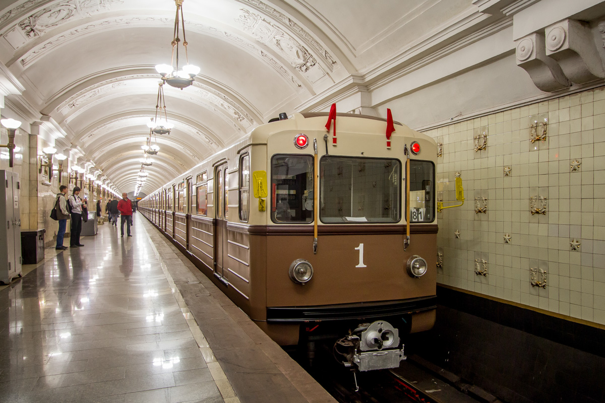
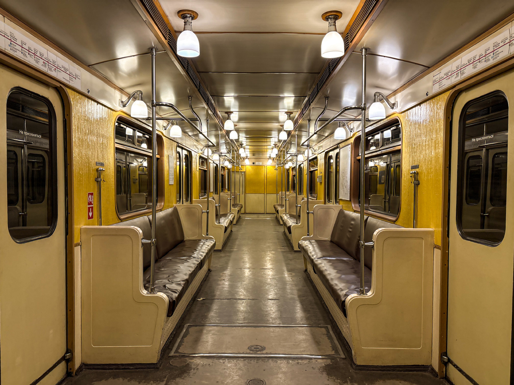
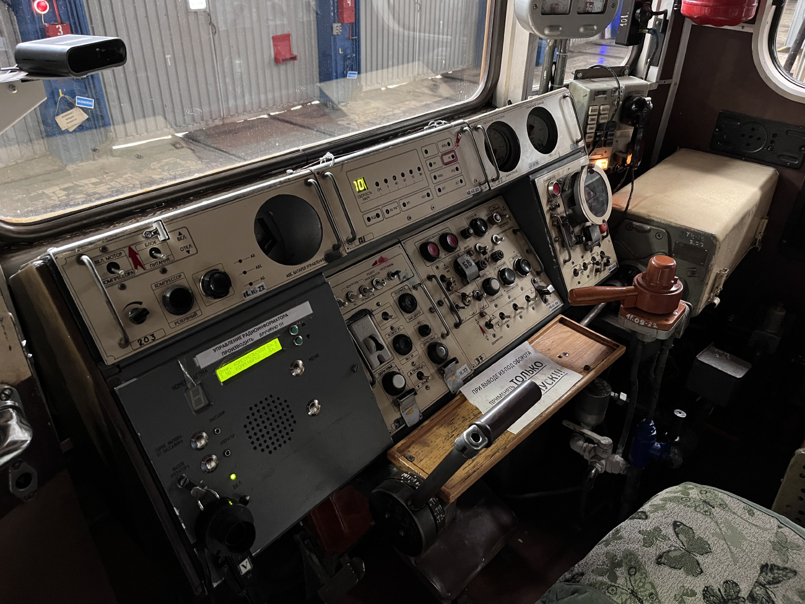

Ретро-поезд «Сокольники»
Ретро-поезд «Сокольники» на базе вагонов типа 81-717.5А — это один из самых известных и атмосферных тематических поездов Московского метрополитена. Этот поезд можно встретить на Сокольнической линии (СокЛ).
Состав выпустили на 1-ю линию Мосметро в 2010 году. Состав имеет нетипичную для московских номерных маску 1-1 и получил ретро-окраску.
Общая информация
| Параметр | Значение |
|---|---|
| Модель | 81-717.5А |
| Депо | ТЧ-1 «Северное» |
| Линия | Сокольническая (СокЛ) |
| Год выпуска | 2010 |
| Начало работы с пассажирами | 15.05.2010 |
| Маска | 1-1 (нетипичная для московских номерных) |
| Окраска | Ретро |
История поезда
Отправлен с завода
Состав отправлен с завода в метрополитен.
Поступление в метрополитен
Поступил в метрополитен через гейт ТЧ-2 «Сокол».
Поступление в депо
Поступил в депо приписки ТЧ-1 «Северное».
Начало работы с пассажирами
Состав начал работу с пассажирами.
Ночной концерт
Участвовал в ночном концерте на станции «Кропоткинская».
Парады поездов
Участвовал в Параде поездов на Кольцевой линии.
Ночной концерт на «Деловом центре»
Участвовал в ночном концерте на станции «Деловой центр» (СолЛ).
Открытие участка
Участвовал в открытии участка «Окружная» — «Селигерская».
Парад на БКЛ
Участвовал в Параде поездов на Большой кольцевой линии.
Парад на Кольцевой
Участвует в Параде поездов на Кольцевой линии.
Особенности поезда
🎭 Маска 1-1
Нетипичная для московских номерных маска 1-1.
🎨 Ретро-окраска
Состав получил ретро-окраску, подчёркивающую его исторический облик.
🛋️ Салон
Диваны с пружинами, линкруст, светильники «Бра».
⚙️ БПСН
Возможно, не так, но у него немного отличается БПСН.
Составность ретро-поезда
2837 — 1946 — 1947 — 1948 — 1949 — 1950 — 2838
7 вагонов
Фотогалерея

📸 Андрей Рябицев

📸 albert33241

📸 Romach
Нажмите на фото для увеличения
«Ретро-поезд «Сокольники» — это машина времени на рельсах. Он переносит пассажиров в атмосферу московского метро прошлых лет и остаётся одним из самых любимых тематических составов».